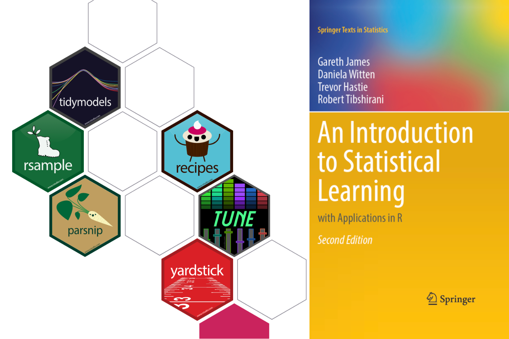
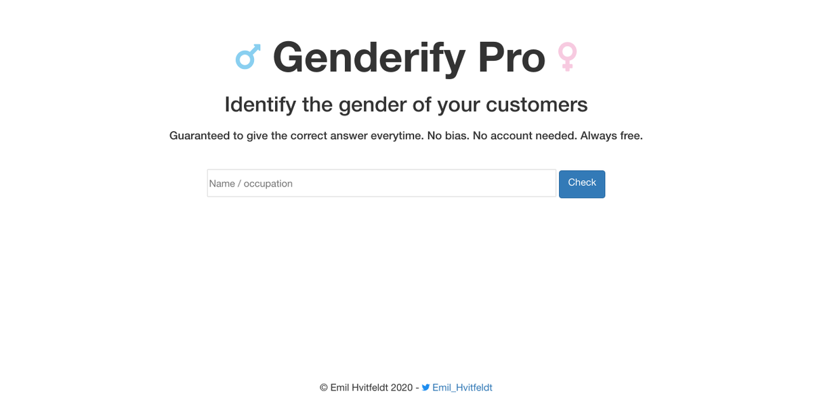
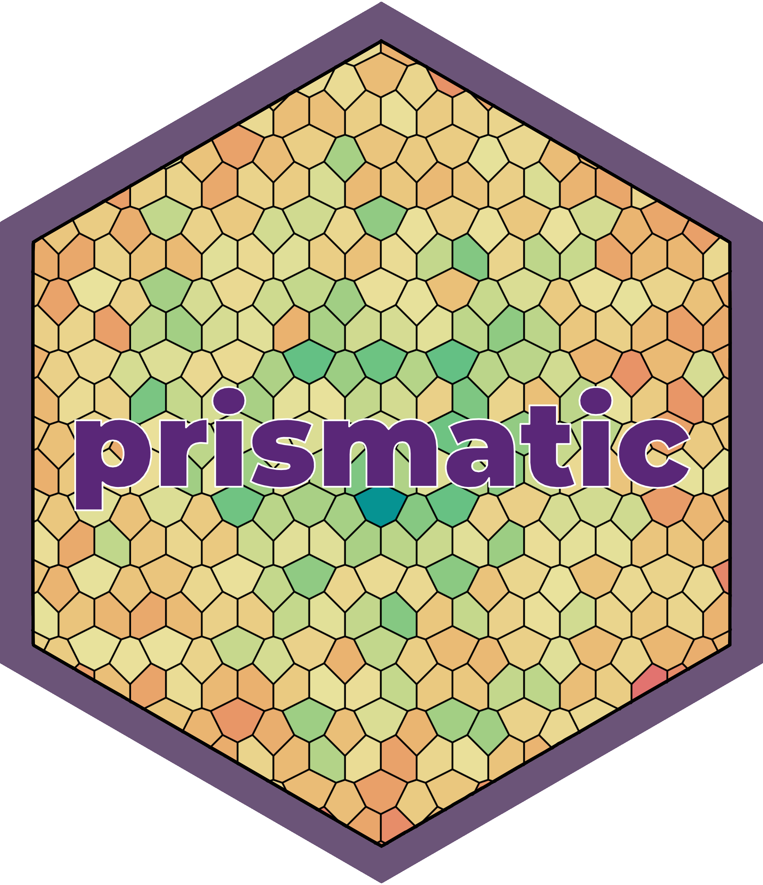
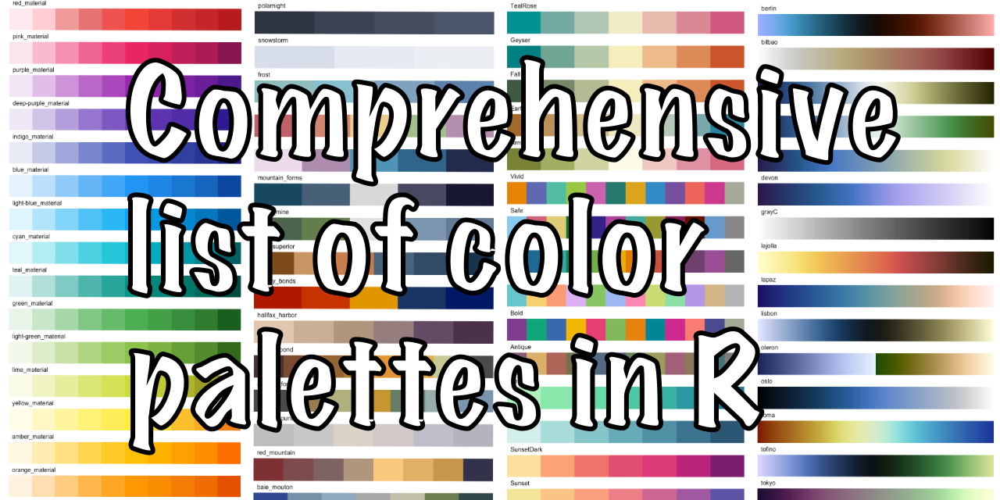

Provides labs to ‘An Introduction to Statistical Learning’ using tidymodels
Book written with Julia Silge

satirical Gender Classification Service
Extra Recipes Steps for imbalanced data

Manipulate and visualize colors in a intuitive, low-dependency and functional way
Provides a framework to download, parse, and store text datasets
Dataset of Supreme Court of the United States opinions
Cleaned gutenbergr text
Creates Page Layout Visualizations
An R Package for H.C. Andersens fairy tales
Extra Recipes Steps for Text Processing
List of textual data sources to be used for text mining in R
A comprehensive collection of color palettes in R using a common interface

Comprehensive list of color palettes available in R